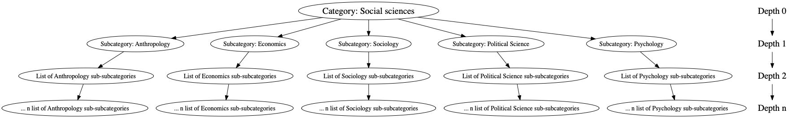

Data Description¶
For our project, we collected wikipedia articles corresponding to five major social science diciplines: Economics, Political Science, Anthropology, Sociology and Psychology. To understand how we did this one need to know the structure of how information is stored into categories on Wikipedia. Each category consists of serveral subcategories with even more sub-subcategories and so on. However, besides the subcategories each level of the depthness also contain the corresponding pages belonging to that level’s subcategories. This is visiualised in the image below.
# Create illustration of wikipedia structure
import pygraphviz as pgv
G=pgv.AGraph(directed=True)
G.add_node("ROOT", label="Category: Social sciences", fontsize=20)
G.add_node("ROOT_i", label="Depth 0", shape = "plaintext", fontsize=20)
disciplines = ["Anthropology",
"Economics",
"Sociology",
"Political Science",
"Psychology"]
for i,k in enumerate(disciplines):
G.add_node("Child_%i" % i, label=f"Subcategory: {k}")
G.add_edge("ROOT", "Child_%i" % i)
G.add_node("Grandchild_%i" % i, label = f"List of {k} sub-subcategories")
G.add_edge("Child_%i" % i, "Grandchild_%i" % i)
G.add_node("Greatgrandchild_%i" % i, label = f"... n list of {k} sub-subcategories")
G.add_edge("Grandchild_%i" % i, "Greatgrandchild_%i" % i)
G.add_node("Child_%ix" % i, label="Depth 1", shape = "plaintext", fontsize=20)
G.add_node("Grandchild_%ix" % i, label="Depth 2", shape = "plaintext", fontsize=20)
G.add_node("Greatgrandchild_%ix" % i, label="Depth n", shape = "plaintext", fontsize=20)
G.add_edge("ROOT_i", "Child_%ix" % i)
G.add_edge("Child_%ix" % i, "Grandchild_%ix" % i)
G.add_edge("Grandchild_%ix" % i, "Greatgrandchild_%ix" % i)
G.layout(prog='dot')
G.draw('wikipedia_struture.png')

To acess the papges at a given level of depth we used the tool PetScan. This enabled us to find all the pages for each discipline depending on the depth of query which in our case were set to 2. Petscan can then be accessed programmatically through Python and provide us with a relevant list of pages to get.
The table bellow shows the five first observations of our data-set, which includes the following variables:
name: The name of the Wikipedia article.parent: The discipline to which the article belongs.edges: Contains all links to another Wikipedia page.text: The raw text of the article.cleaned_text: Punctuation removed, lower-cased.lemmatized: The cleaned text in lemmatized form, stop words removed.tokens: The lemmatized tokenized into list of words.gcc: Dummy for if the article is part of the giant component in the network.
The data can be downloaded from the following link.
import pandas as pd
import numpy as np
from ast import literal_eval
from collections import defaultdict
df = pd.read_pickle('Final_df.pickle')
df = df[['title', 'parent', 'edges', 'text', 'cleaned_text', "lemmatized", "tokens", "gcc"]]
df["title"] = df["title"].apply(lambda x: " ".join(x.split("_")))
df["parent"] = df["parent"].apply(lambda x: " ".join(x.split("_")))
display(df)
| title | parent | edges | text | cleaned_text | lemmatized | tokens | gcc | |
|---|---|---|---|---|---|---|---|---|
| 0 | political science | political science | [comparative_politics, public_administration, ... | \n Political science is the scientific study ... | political science is the scientific study of ... | political science scientific study politics so... | [political, science, scientific, study, politi... | 1 |
| 1 | world values survey | political science | [religion, left-wing_politics, joseph_schumpet... | The World Values Survey (WVS) is a global res... | the world values survey wvs is a global resea... | world value survey wv global research project ... | [world, value, survey, wv, global, research, p... | 1 |
| 2 | voter turnout | political science | [tactical_voting, political_science, political... | In political science, voter turnout is the pe... | in political science voter turnout is the per... | political science voter turnout percentage eli... | [political, science, voter, turnout, percentag... | 1 |
| 3 | mierscheid law | political science | [] | The Mierscheid law is a satirical forecast[ci... | the mierscheid law is a satirical forecast ci... | mierscheid law satirical forecast citation nee... | [mierscheid, law, satirical, forecast, citatio... | 0 |
| 4 | political groups of the european parliament | political science | [civil_service, foreign_policy, london_school_... | \n \n \n \n The political groups of the Europ... | the political groups of the european parliame... | political group european parliament parliament... | [political, group, european, parliament, parli... | 1 |
| ... | ... | ... | ... | ... | ... | ... | ... | ... |
| 4297 | sascha altman dubrul | psychology | [anti-psychiatry, medicalization, psychoanalyt... | Sascha Altman DuBrul, a.k.a. Sascha DuBrul or... | sascha altman dubrul a k a sascha dubrul or s... | sascha altman dubrul k sascha dubrul sascha sc... | [sascha, altman, dubrul, k, sascha, dubrul, sa... | 1 |
| 4298 | grotesque body | psychology | [social_system, burlesque] | The grotesque body is a concept, or literary ... | the grotesque body is a concept or literary t... | grotesque body concept literary trope put forw... | [grotesque, body, concept, literary, trope, pu... | 1 |
| 4299 | imaginary audience | psychology | [] | The imaginary audience refers to a psychologi... | the imaginary audience refers to a psychologi... | imaginary audience refers psychological state ... | [imaginary, audience, refers, psychological, s... | 1 |
| 4300 | lady wonder | psychology | [astrology, mediumship, communal_reinforcement... | Reportedly haunted locations:\n Lady Wonder (... | reportedly haunted locations lady wonder born... | reportedly haunted location lady wonder born l... | [reportedly, haunted, location, lady, wonder, ... | 1 |
| 4301 | ego integrity | psychology | [psychometrics, religion, object_relations_the... | Ego integrity was the term given by Erik Erik... | ego integrity was the term given by erik erik... | ego integrity term given erik erikson last eig... | [ego, integrity, term, given, erik, erikson, l... | 1 |
4302 rows × 8 columns
In the table bellow we display summary statistics including the average number of articles for each discipline, number of edges and word count. As can be seen the distribution is rather skewed, with Antropology for example having more than double the amount of articles compared to Political Science.
#Create descriptives table
tab = defaultdict(list)
for discipline in df['parent'].unique():
avg_edges = []
avg_pagelen = []
for row in df.loc[df['parent']==discipline].iterrows():
avg_edges.append(len(row[1]['edges']))
avg_pagelen.append(len(row[1]['tokens']))
tab['Discipline'].append(discipline)
tab['Number of articles'].append(df.loc[df['parent']==discipline].shape[0])
tab['Avg. edges'].append(np.mean(avg_edges))
tab['Avg. word count'].append(np.mean(avg_pagelen))
tab = pd.DataFrame(tab)
tab.set_index('Discipline').round(2)
| Number of articles | Avg. edges | Avg. word count | |
|---|---|---|---|
| Discipline | |||
| political science | 1614 | 3.97 | 714.27 |
| economics | 1020 | 3.30 | 433.05 |
| anthropology | 510 | 4.86 | 815.08 |
| psychology | 543 | 4.68 | 857.45 |
| sociology | 615 | 3.28 | 575.52 |